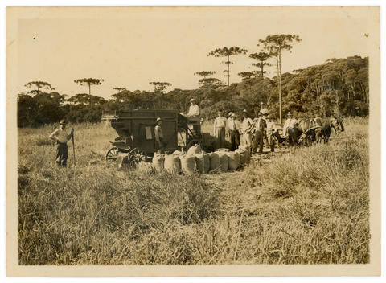

Povos originários e ocupação do território · Acontecimento 08 de 08
Expansão das atividades agrícolas
Da presença pré-colonial à atualidade

A agricultura antes da colonização europeia
Antes da chegada dos europeus, o território catarinense era habitado pelos Guarani, Kaingang e Laklãnõ-Xokleng. Escavações recentes no planalto mudaram a imagem de que esses povos viviam apenas da caça e da coleta. Os resultados indicam que os ancestrais dos Kaingang e dos Laklãnõ-Xokleng, os proto-Jê, praticavam alguma forma de agricultura, além do cultivo de milho e abóbora. Um estudo divulgado pela Fapesp aponta também o cultivo de mandioca e feijão no planalto há cerca de mil anos. No litoral, a Ilha de Santa Catarina era habitada pelos Carijós, um ramo dos Guarani, frequentemente apontados como os primeiros a cultivar mandioca no estado.
A produção agrícola no período colonial
A colonização açoriana começou em meados do século XVIII, na Ilha de Santa Catarina. Orientados pelo governo colonial, os colonos encontraram na mandioca uma fonte segura de sobrevivência. Surgiram engenhos de farinha e de cana. Estatísticas de 1794 registram cerca de 382 engenhos de farinha de mandioca e mais de cem engenhos de cana em produção na ilha. Antes disso, no fim do século XVII, a região de São Francisco do Sul já contava com dezenove engenhos de aguardente e catorze de farinha de mandioca.
A produção ia além da subsistência. Estudos indicam que Santa Catarina não permaneceu como economia de subsistência durante todo o período de 1650 a 1850. No fim do século XVIII e início do XIX, contribuía para o abastecimento do Centro-Sul com milho, feijão, arroz, trigo, cebola e farinha de mandioca. Grandes comerciantes do Rio de Janeiro passaram a comprar farinha catarinense para o mercado interno. A distribuição de terras seguia o sistema de sesmarias, com concessões de pequenas e grandes extensões na então Capitania e depois Província.
A chegada dos imigrantes e a expansão das pequenas propriedades
No século XIX, a colonização por imigrantes europeus mudou a estrutura agrária. Uma terceira etapa do povoamento começou na década de 1820, com colônias alemãs como São Pedro de Alcântara, fundada em 1829. Depois vieram outros núcleos: a Colônia Blumenau foi criada em 1850 com 17 imigrantes alemães, chefiados por Hermann Blumenau. A partir de 1875, a região também recebeu trentinos e italianos.
A Lei de Terras de 1850 intensificou a imigração europeia para Santa Catarina. Esse avanço sobre o território aumentou os conflitos com os povos indígenas, sobretudo os Laklãnõ-Xokleng. O modelo predominante foi o de pequenos lotes com agricultura diversificada, trabalhados com mão de obra familiar. Estudos de regionalização do IBGE classificam Joinville, Blumenau e o Itajaí Norte como regiões coloniais de pequenas propriedades.
A diversificação dos cultivos e a formação das economias regionais
O desenvolvimento catarinense teve base na pequena produção. Segundo Goularti Filho, a pequena produção mercantil foi o padrão de crescimento da economia do estado com mais intensidade entre 1880 e 1945. Cada região construiu sua própria vocação. No Oeste, a extração de erva-mate e de madeira — sobretudo araucária — foi central. A colonização do extremo oeste, entre 1920 e 1980, abasteceu mercados do Sudeste e deu origem a grandes agroindústrias locais.
Nessa região, colonos descendentes de italianos e alemães vindos do Rio Grande do Sul, a partir da década de 1920, construíram a tradição de produzir suínos e aves. A segunda metade do século XX foi marcada pela expansão agroindustrial, principalmente a partir da suinocultura.
O trabalho no campo: escravidão, imigração e agricultura familiar
A escravidão esteve presente na lavoura catarinense. Estudos sobre a Província apontam a agricultura e a pesca como bases da economia e destacam o enraizamento do trabalho escravizado na sociedade. Em São Francisco do Sul, cerca de 91% da população escravizada trabalhava na lavoura, no plantio de mandioca, em engenhos e em roças de coivara.
Já os imigrantes trabalharam sobretudo em regime familiar. No plano nacional, a política imigratória também tinha como objetivo trazer trabalhadores para substituir pessoas escravizadas na agricultura. Os estudos sobre o trabalho escravizado e livre em Santa Catarina seguem em revisão historiográfica.
A modernização da agricultura no século XX
O serviço de extensão rural chegou a Santa Catarina em 1956, com a criação da ACARESC. Na segunda metade da década de 1960 começou a “modernização” da agricultura brasileira, tendo o crédito como instrumento inicial, junto à ampliação da extensão rural, da pesquisa agropecuária e da defesa sanitária.
Em Santa Catarina, essa “modernização conservadora” teve como pilares o desenvolvimento dos frigoríficos e o modelo de integração, com apoio de cooperativas e crédito rural. A ACARESC foi sucedida pela Epagri. Pesquisadores também apontam que a pequena propriedade passou a ficar subordinada a complexos agroindustriais.
A agricultura catarinense na atualidade
Segundo a Epagri/Cepa, o Valor da Produção Agropecuária de Santa Catarina chegou a R$ 74,9 bilhões em 2025, alta de 15,1% em relação ao ano anterior. Suínos responderam por 21,9% do valor, seguidos por frango (15,4%), leite (11,5%) e bovinos (5,3%). O estado produziu 18,3 milhões de suínos em 2025, volume recorde, e respondeu por mais da metade das exportações brasileiras de carne suína.
A agricultura familiar segue central: está presente em cerca de 78% dos estabelecimentos e gera mais de 50% do valor da produção. Santa Catarina é o único estado brasileiro livre de febre aftosa sem vacinação e tem destaque nacional em maçã, cebola, tabaco, erva-mate, arroz, mel, alho e palmito. É também o estado com a maior área cultivada de maçã do país.
Fontes consultadas
Revista Pesquisa Fapesp; UFJF (Peres); PUCRS (engenhos de farinha); História Econômica & História de Empresas (Passos, 2022); Insper; USP/IAU (Serraglio e Santos); UFSC (Santa Catarina em História); UFRGS (colonização trentina e italiana em Blumenau); Revista de Economia da FGV; Diálogos (Goularti Filho); Epagri/Cepa; Embrapa; Revista NECAT; UFFS; Assembleia Legislativa de Santa Catarina; Agrolink e NSC Total (dados de 2025).